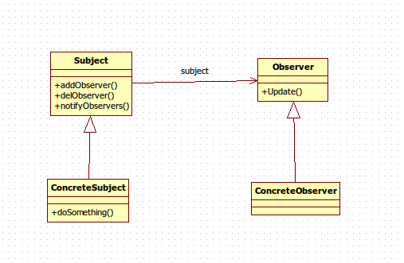

观察者模式也称“发布订阅模式”。
该模式定义对象之间的一对多的依赖关系，使得每当一个对象改变状态，则所有依赖于它的对象都会得到通知并被自动更新。
package DesignPattern;
import java.util.Vector;
public abstract class Subject {
//定义一个观察者数组
private Vector<Observer> obsVector = new Vector<Observer>();
//增加一个观察者
public void addObserver(Observer observer) {
this.obsVector.add(observer);
}
//删除一个观察者
public void delObserver(Observer observer) {
this.obsVector.remove(observer);
}
//通知所有观察者
public void notifyObservers() {
for (Observer observer : obsVector) {
observer.update();
}
}
}
被观察者的职责非常简单，就是定义谁能观察，谁不能观察。
package DesignPattern;
public interface Observer {
//更新方法
public void update();
}
观察者一般是一个接口，每一个实现该接口的实现类都是具体的观察者。
package DesignPattern;
public class ConcreteSubject extends Subject {
//具体业务
public void doSomething() {
super.notifyObservers();
System.out.println("观察者通知完毕");
}
}
我们现在看到的是一个纯净的被观察者，在具体的项目中该类有很多变种。
package DesignPattern;
public class ConcreteObserver implements Observer {
@Override
public void update() {
System.out.println("接收到信息，并进行处理！");
}
}
package DesignPattern;
public class Client {
public static void main(String[] args) {
//创建一个被观察者
ConcreteSubject subject = new ConcreteSubject();
//定义一个观察者
Observer obs = new ConcreteObserver();
//观察者观察被观察者
subject.addObserver(obs);
//观察者开始行动了
subject.doSomething();
}
}
接收到信息，并进行处理！
观察者通知完毕

这里我给出的例子是一个最简单的观察者样例。真实情况是基于这个模板的。
使用观察者模式的情景很多。比如：